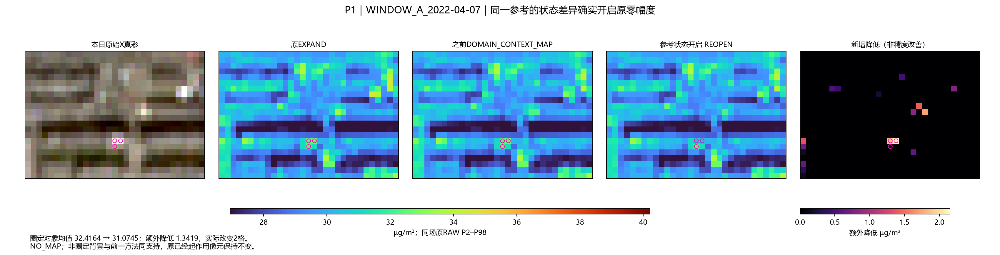
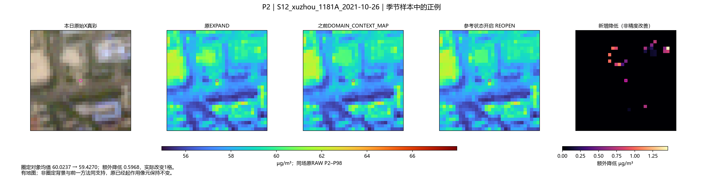
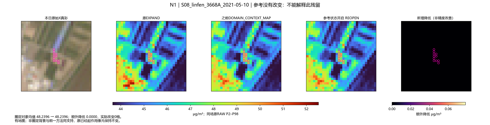
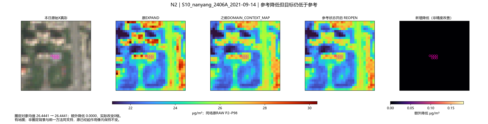
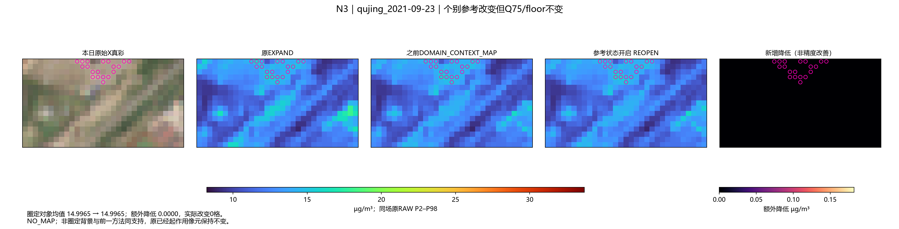
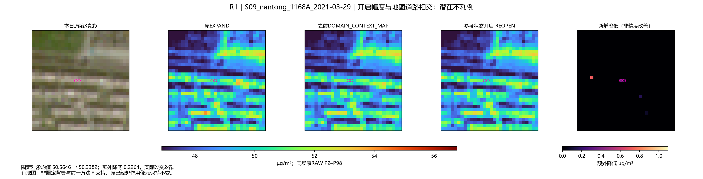
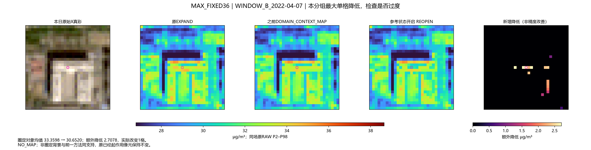
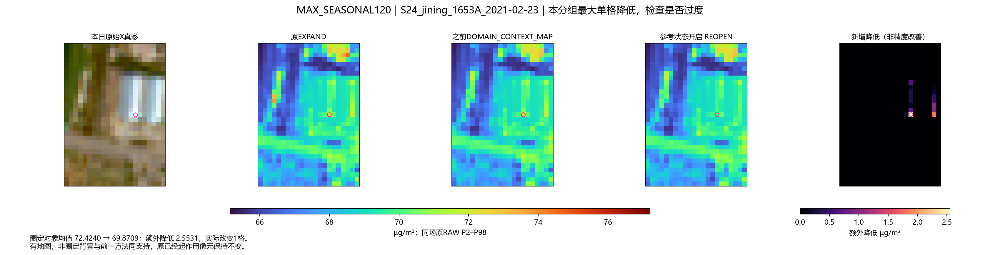
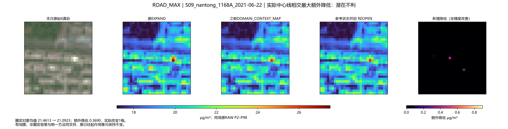

156原场＋50新事件场真实推理一次；0新参数、0拟合；原已作用像元、非亮像元、NIR与支持精确不变。原36无地图。不是所有小房顶都得到新作用。
结果与不利场 · 36/120分组 · 287个诊断对象的实际反应 · 真实事件变化
对象均值 32.4164 → 31.0745，额外降低 1.3419 µg/m³；2格真实改变。

对象均值 60.0237 → 59.4270，额外降低 0.5968 µg/m³；1格真实改变。

对象均值 48.2396 → 48.2396，额外降低 0.0000 µg/m³；0格真实改变。

对象均值 26.4441 → 26.4441，额外降低 0.0000 µg/m³；0格真实改变。

对象均值 14.9965 → 14.9965，额外降低 0.0000 µg/m³；0格真实改变。

对象均值 50.5646 → 50.3382，额外降低 0.2264 µg/m³；2格真实改变。

对象均值 33.3598 → 30.6520，额外降低 2.7078 µg/m³；1格真实改变。

对象均值 72.4240 → 69.8709，额外降低 2.5531 µg/m³；1格真实改变。

对象均值 21.4613 → 21.0923，额外降低 0.3690 µg/m³；1格真实改变。
